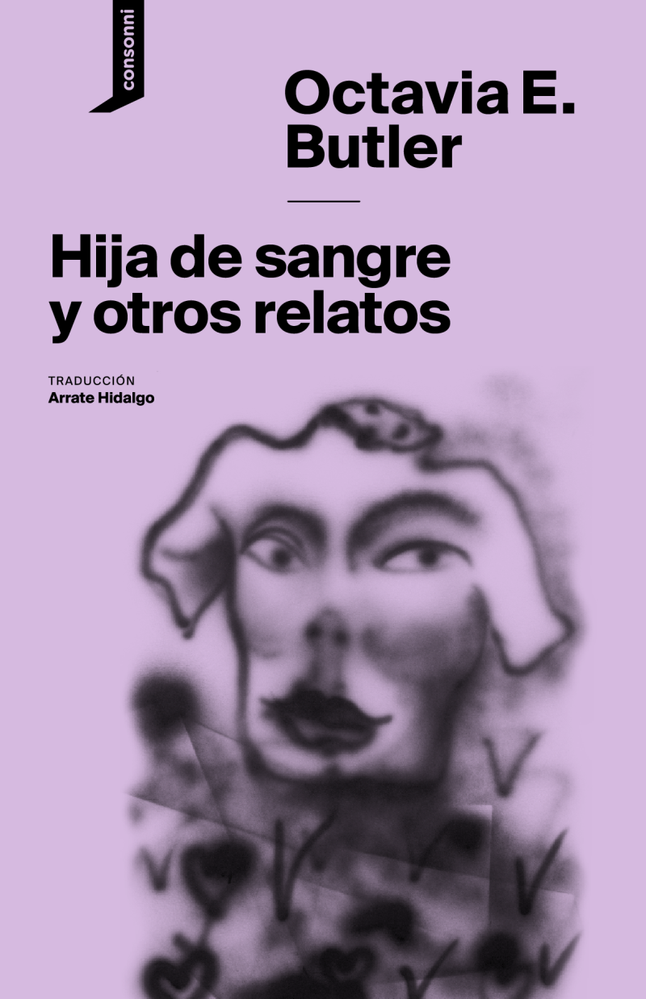

La parábola de los talentos

- Todo aquello que tocáis lo Cambiáis. Todo aquello que Cambiáis os Cambia a vosotros. La única verdad perdurable es el Cambio. Dios es Cambio.
- «Dios es cambio», creía mi madre. Eso es lo que decía en el primer versículo del Primer Libro de los Vivos de Semilla Terrestre.
- Para sobrevivir, dejad que el pasado os enseñe: las costumbres, las luchas, los dirigentes y los pensadores del pasado. Dejad que todos ellos os ayuden. Dejad que os inspiren, os adviertan, os den fuerzas. Pero cuidado: Dios es Cambio. El pasado pasado está. Lo que ya ha sido no puede volver. Para sobrevivir, conoced el pasado. Dejad que os toque y luego dejad que el pasado se marche.
- […] nacemos no con un fin, sino con potencial.
- Semilla Terrestre es la aportación de Olamina a lo que según ella debería ser un esfuerzo de toda la especie para evitar o al menos prolongar el ciclo evolutivo de desarrollo-crecimiento-muerte al que se enfrenta la humanidad, al que se enfrentan todas las especies.
- Semilla Terrestre seguirá. Crecerá. Nos obligará a convertirnos en la gente fuerte, decidida y flexible que debemos ser si queremos crecer lo suficiente para alcanzar el Destino.
- Nosotros causamos los problemas y luego nos sentamos a ver cómo crecían hasta convertirse en crisis
- En general, la Calamidad ha tenido el efecto de una Tercera Guerra Mundial a plazos
- quebrar a la gente es mucho más fácil que recomponerla de nuevo.
- La paz es peligrosa porque fomenta la complacencia y el descuido, que también acaba siendo letal tarde o temprano.
- Al parecer, a los seres humanos siempre nos ha resultado reconfortante tener a alguien a quien humillar: un nivel inferior de congéneres que son muy vulnerables pero a quienes, de algún modo, se puede culpar y castigar por todos o algunos de los problemas. Necesitamos esa clase inferior tanto como necesitamos iguales para aliarnos y competir, y superiores a los que recurrir en busca de guía y ayuda.
- De eso trataba Semilla Terrestre —dije—. Yo quería que entendiéramos lo que podríamos ser, lo que podríamos hacer. Quería darnos un objetivo, un fin, algo lo bastante grande, lo bastante complejo, lo bastante difícil y, al final, lo bastante radical para ser más de lo que nunca hemos sido. Seguimos tropezando con las mismas piedras, ¿sabes? O sea, cada vez sabemos más sobre el universo físico, sobre nuestros cuerpos, sobre tecnología, pero, por algún motivo, a lo largo de la historia, seguimos construyendo imperios de uno u otro tipo. Seguimos librando guerras sin sentido que justificamos y que nos apasionan pero que, al final, lo único que hacen es matar a muchísimas personas, mutilar a otras, empobrecer a más todavía, propagar enfermedades y hambre y preparar el escenario para la siguiente guerra. Y, cuando analizamos todo eso históricamente, nos limitamos a encogernos de hombros y decir: «Bueno, así son las cosas. Así ha sido siempre».
- ¿Por qué crees que hay gente allí que quiere emigrar a Rusia o Alaska y otros que se limitan a intentar conservar su pedacito del siglo XX hasta que se mueran? No hay nadie intentando construir nada que sustituya lo que hemos perdido o nos dé el impulso para conseguir algo mejor.
- Pero aquí no hay nada más que existencia.
- Los políticos sacudían la cabeza y afirmaban con tristeza que la enseñanza universal era un experimento fallido. Algunas empresas empezaron a darles estudios a los hijos de sus trabajadores lo bastante bien, al menos, para permitirles ser la siguiente generación de trabajadores. Entonces empezaron a ponerse otra vez de moda los pueblos fabriles, ahora llamados corporativos. Ofrecían seguridad, empleo y estudios. Todo aquello estaba muy bien, pero la empresa que te daba estudios era tu dueña hasta que pagaras la deuda que contraías con ella. Adquirías una servidumbre por deudas y, si ellos no podían usarte, podían venderte a otra división de la empresa o a una empresa distinta. Tú, al igual que tus estudios, te convertías en un bien que podía venderse o comprarse.
- La pobreza no importa tanto si puedes conseguir tu propio espacio y que te respeten. Ahora lo sé, pero entonces no lo sabía.
- Hemos sobrevivido así de bien porque no dejamos de aprender. Nuestros clientes ya saben que pagan un precio justo por lo que nos compran.
- Asociarse es dar, tomar, aprender, enseñar, ofrecer el máximo beneficio posible mientras se hace el menor daño posible. Asociarse es entablar una simbiosis mutualista. Asociarse es vivir. Toda entidad, todo proceso que no pueda o no deba resistirse o evitarse debe asumirse en sociedad. Debéis asociaros unos con otros. Asociaros entre comunidades diversas. Asociaros con la vida. Asociaros con cualquier mundo que sea vuestro hogar. Asociaros a Dios. Solo asociados podemos prosperar, crecer, Cambiar. Solo asociados podemos vivir.
- Pensaba que en las comunidades pequeñas la gente se mostraba más responsable hacia los demás. Es más difícil librarse cuando alguien hace algo grave, y más difícil incluso plantearse hacerlo cuando todo el mundo sabe quién eres, dónde vives, quién es tu familia y si te estás metiendo en tus asuntos o en los de otro.
- La bondad facilita el Cambio. El amor aquieta el miedo.
- Yo quiero lo que está ocurriendo —respondí—. Quiero que sigamos creciendo, haciéndonos más fuertes y ricos, que sigamos aprendiendo nosotros y enseñando a nuestros hijos, mejorando nuestra comunidad. Estas son las cosas que deberíamos hacer de momento y en el futuro próximo.
- Semilla Terrestre va de prepararse para cumplir el Destino. Va de aprender a vivir aliados entre nosotros en pequeñas comunidades y, al mismo tiempo, forjar una alianza sostenible con el entorno. Va de considerar la educación y la capacidad de adaptación como los elementos fundamentales que son. Va de… —Miré a Len, descubrí una sonrisita en su rostro y me relajé—. Va de mucho más que eso. Pero eso es lo básico.
- Debe de haber buenos matrimonios en algún sitio, pero a mí el matrimonio me hacía pensar en gente que se toleraba y se aguantaba por miedo a la soledad o porque cada una de las partes suponía para el otro una costumbre que no se podía abandonar del todo.
- Pero en estos tiempos, cuando más de la mitad de la gente del país no sabe ni siquiera leer, la historia no es más que otra inmensa desconocida.
- Una de las cosas más valiosas con las que comerciaban entre sí era el conocimiento.
- Cada niño hace al menos un trabajo en grupo y uno individual al año. Casi todos descubren que los dos trabajos, sin relación entre sí, acaban influyendo uno en el otro de manera imprevista. Esto ayuda a los niños a empezar a darse cuenta de cómo funciona el mundo, de que todas las cosas, por muy distintas que sean, interactúan y se influyen. Los niños empiezan a enseñarse y a enseñar a los demás. Empiezan a aprender a aprender. Con la ayuda de sus tutores, eligen un aspecto de la historia, la ciencia, las matemáticas, el arte o lo que sea e investigan sobre él para poder enseñar a los demás. Y luego hacen precisamente eso. Enseñan. Para que salga bien, tienen que saber qué información tenemos disponible aquí y qué van a tener que buscar en las redes. Como todavía no somos ricos, cuanto más podamos ofrecerles de nuestra biblioteca, mejor.
- No era casualidad que en Bellota la iglesia y la escuela fueran lo mismo. No solo eran el mismo edificio. Eran la misma institución. Si el Destino de Semilla Terrestre es tener algún sentido más allá de un remoto paraíso mítico, Semilla Terrestre debe ser no solo un credo, sino una forma de vida. Hay que criar a los niños en ella. A los adultos hay que recordársela a menudo, reconducirlos e impulsarlos hacia ella.
- Claro que Semilla Terrestre era una secta poco común. Financiaba la exploración y la investigación científica, así como la creatividad tecnológica. Fundaba escuelas elementales y, al final, hasta universidades, y ofrecía becas completas a alumnos pobres pero con talento. Los beneficiarios de las becas tenían que comprometerse a dedicarse durante siete años a enseñar, ejercer la medicina o emplear sus habilidades para mejorar la vida en las numerosas comunidades de Semilla Terrestre. En última instancia, la intención era ayudar a las comunidades a partir hacia las estrellas y a vivir en los mundos remotos que encontraran orbitando en torno a ellas.
- Era como si mis profesores pensaran que ya se habían creado todas las historias posibles y fuera pecado crear más (al menos, si era yo quien las creaba).
- ¿Sois Semilla Terrestre? ¿Tenéis fe? La fe no os salvará. Solo os salvarán las acciones guiadas y moldeadas por la fe y el conocimiento. La fe inicia y guía la acción o no hace nada.
- Esta vez no se trata de construir una comunidad física. Creo que por fin me doy cuenta de lo fácil que es destruir una comunidad así. Necesito crear algo que llegue lejos y sea más difícil de matar. Por eso tengo que enseñar a maestros. Debo crear no solo un grupito de seguidores entregados, no solo un conjunto de comunidades como me imaginaba antes, sino un movimiento. Debo crear una nueva forma de fe, una forma que pueda evolucionar hacia una nueva religión, una nueva fuerza motora que pueda ayudar a la humanidad a dedicar su enorme potencial de energía, competitividad y creatividad a hacer el inmenso trabajo de alcanzar el Destino.
- Algunos querrán hacerlo por sus hijos, para darles la oportunidad de empezar de nuevo y hacer las cosas bien esta vez. Pero no bastará solo con la idea. La idea no conseguirá suficiente gente, dinero ni persistencia. Cumplir el Destino es un proyecto a largo plazo, caro, incierto; mejor dicho, son cientos de proyectos. Quizá miles. Y sin garantías de nada. Los políticos, además, piensan a corto plazo, son oportunistas, a veces con conciencia, pero oportunistas al fin y al cabo. Los empresarios tienen sed de beneficios, a corto y largo plazo. La verdad es que prepararse para el viaje interestelar y luego enviar naves llenas de colonos será seguro una tarea tan larga, ingrata, cara y difícil que sospecho que solo una religión podría llevarla a cabo. Un montón de gente hallará formas de sacar dinero de ahí. Eso podría poner en marcha el proyecto. Pero hará falta algo tan esencialmente humano y tan esencialmente irracional como la religión para no desviarse del objetivo y mantenerlo en funcionamiento; durante generaciones si es preciso.
- Todas las confesiones parecían pensar que poseían la verdad —la única verdad— y que los suyos iban a la dicha del cielo mientras que todos los demás iban al tormento eterno del infierno.
- Mi madre no discutía con nadie hasta estar muy segura de que iba a ganar. Cuando no estaba segura, encontraba maneras de evitar la discusión o de transigir con sus oponentes hasta que estos tropezaban o se ponían en una posición en la que ella pudiera hacerlos tropezar. Una táctica inteligente, supongo (o traicionera, según el punto de vista).
- Todos necesitamos sueños (nuestras fantasías) que nos sustenten en épocas difíciles. No tiene nada de malo, siempre que no empecemos a confundir las fantasías con la realidad, como le pasó a ella.
- ★ El prodigio es, en esencia, flexibilidad y una obsesión persistente y positiva. Sin persistencia, lo que queda es el entusiasmo del momento. Sin flexibilidad, lo que queda puede canalizarse hacia un fanatismo destructor. Sin una obsesión positiva, no hay nada de nada.
- Y una obsesión positiva, tierna y poderosa, mitiga el dolor, desvía la ira y nos embarca a todos en la mayor y más intensa de las batallas que elegimos.
- El objetivo nos une: centra nuestros sueños, guía nuestros planes, fortalece nuestras iniciativas. El objetivo nos define, nos moldea y nos ofrece grandeza.
- Necesitamos la imagen que el Destino nos da de nosotros mismos como una especie en desarrollo, con un fin. ¡Necesitamos ser la especie adulta que el Destino puede ayudarnos a ser! Si queremos ser algo más que dinosaurios blandos que se desarrollan, se especializan y mueren, necesitamos las estrellas. Por eso el Destino de Semilla Terrestre es enraizar entre las estrellas. Sé que no quieres oír esos versículos ahora mismo, pero ese en concreto es… fundamental para nosotros, para los seres vivos, me refiero. Cuando no tenemos un objetivo difícil a largo plazo en el que esforzarnos, nos peleamos entre nosotros. Nos destruimos. Tenemos esos periodos caóticos y apocalípticos de locura homicida.
- Podemos crecer. Podemos dejar el nido. Podemos cumplir el Destino, crear nuestros hogares entre las estrellas y convertirnos en una mezcla de lo que queremos ser y lo que nuestros nuevos entornos nos desafíen a ser. Nuestros nuevos mundos nos reharán mientras nosotros los rehacemos. Y alguna de la nueva gente que surgirá de todo ello desarrollará nuevas formas de salir adelante. Tendrá que hacerlo. Con eso se romperá el viejo círculo, aunque solo sea para empezar uno nuevo y distinto.
- un debate retrospectivo y prospectivo para que estemos al tanto de lo que hemos hecho y lo que debemos hacer, emprendamos los cambios necesarios y aprovechemos nuevas oportunidades.
- Subrayas menos el colapso que la salida: aprender y enseñar como motor, el trabajo digno frente a la servidumbre por deudas, la comunidad pequeña y responsable, y una meta lejana y difícil que dé sentido al esfuerzo colectivo.
 La parábola del sembrador ✓ LeídoParable of the Sower · 1993 · Earthseed 1 · Capitán Swing, 2021
La parábola del sembrador ✓ LeídoParable of the Sower · 1993 · Earthseed 1 · Capitán Swing, 2021Lauren Olamina, hiperempática, huye de una California en colapso y funda Semilla Terrestre.
capitanswing.com · La parábola del sembrador Parentesco ▶ Siguiente lecturaKindred · 1979 · Capitán Swing, 2018
Parentesco ▶ Siguiente lecturaKindred · 1979 · Capitán Swing, 2018Dana, escritora negra de 1976, viaja una y otra vez a una plantación esclavista de Maryland.
capitanswing.com · Parentesco Parentesco (novela gráfica) ✦ Por descubrirKindred: A Graphic Novel Adaptation · 2017 · Duffy & Jennings · Anaya Multimedia, 2019
Parentesco (novela gráfica) ✦ Por descubrirKindred: A Graphic Novel Adaptation · 2017 · Duffy & Jennings · Anaya Multimedia, 2019Adaptación en cómic de Parentesco; premio Bram Stoker 2018 a la mejor novela gráfica.
traficantes.org · Parentesco (novela gráfica)
Hija de sangre y otros relatos ✦ Por descubrirBloodchild and Other Stories · 1995 · consonni, 2020Siete relatos y dos ensayos; incluye «Hija de sangre» (Hugo y Nebula) y «Sonidos de habla» (Hugo).
consonni.org · Hija de sangre La estirpe de Lilith (Xenogénesis) ✦ Por descubrirLilith's Brood · 1987–1989 · trilogía · Nova, 2021 (un volumen)
La estirpe de Lilith (Xenogénesis) ✦ Por descubrirLilith's Brood · 1987–1989 · trilogía · Nova, 2021 (un volumen)Tras una guerra nuclear, los oankali rescatan a la humanidad a cambio de mezclarse genéticamente con ella.
penguinlibros.com · La estirpe de Lilith Semilla salvaje 🏠 En casaWild Seed · 1980 · Saga del Tejido 1 · consonni, 19 oct 2026
Semilla salvaje 🏠 En casaWild Seed · 1980 · Saga del Tejido 1 · consonni, 19 oct 2026Doro, inmortal que roba cuerpos, y Anyanwu, sanadora cambiaformas, se enfrentan durante siglos.
consonni.org · Semilla salvaje- Sumo tejedor ✦ Por descubrirPatternmaster · 1976 · Saga del Tejido · Anunciada, sin fecha
Su primera novela publicada; consonni la anuncia junto a Nuevo linaje y Arca para próximos años.
distopolis.com · anuncio Saga del Tejido - Fledgling Sin ediciónFledgling · 2005 · última novela · Sin edición en castellano
Una vampira de aspecto infantil y amnésica reconstruye su identidad y su comunidad simbiótica.
isfdb.org · Fledgling (ediciones)
El prodigio es, en esencia, flexibilidad y una obsesión persistente y positiva. Sin persistencia, lo que queda es el entusiasmo del momento. Sin flexibilidad, lo que queda puede canalizarse hacia un fanatismo destructor. Sin una obsesión positiva, no hay nada de nada.
Dios es Cambio NÚCLEO
1Todo aquello que tocáis lo Cambiáis. Todo aquello que Cambiáis os Cambia a vosotros. La única verdad perdurable es el Cambio. Dios es Cambio.
2«Dios es cambio», creía mi madre. Eso es lo que decía en el primer versículo del Primer Libro de los Vivos de Semilla Terrestre.
36Para sobrevivir, dejad que el pasado os enseñe: las costumbres, las luchas, los dirigentes y los pensadores del pasado. Dejad que todos ellos os ayuden. Dejad que os inspiren, os adviertan, os den fuerzas. Pero cuidado: Dios es Cambio. El pasado pasado está. Lo que ya ha sido no puede volver. Para sobrevivir, conoced el pasado. Dejad que os toque y luego dejad que el pasado se marche.
29[…] nacemos no con un fin, sino con potencial.
9Semilla Terrestre es la aportación de Olamina a lo que según ella debería ser un esfuerzo de toda la especie para evitar o al menos prolongar el ciclo evolutivo de desarrollo-crecimiento-muerte al que se enfrenta la humanidad, al que se enfrentan todas las especies.
41Semilla Terrestre seguirá. Crecerá. Nos obligará a convertirnos en la gente fuerte, decidida y flexible que debemos ser si queremos crecer lo suficiente para alcanzar el Destino.
La Calamidad / crisis CRISIS
3Nosotros causamos los problemas y luego nos sentamos a ver cómo crecían hasta convertirse en crisis
4En general, la Calamidad ha tenido el efecto de una Tercera Guerra Mundial a plazos
23quebrar a la gente es mucho más fácil que recomponerla de nuevo.
7La paz es peligrosa porque fomenta la complacencia y el descuido, que también acaba siendo letal tarde o temprano.
12Al parecer, a los seres humanos siempre nos ha resultado reconfortante tener a alguien a quien humillar: un nivel inferior de congéneres que son muy vulnerables pero a quienes, de algún modo, se puede culpar y castigar por todos o algunos de los problemas. Necesitamos esa clase inferior tanto como necesitamos iguales para aliarnos y competir, y superiores a los que recurrir en busca de guía y ayuda.
31De eso trataba Semilla Terrestre —dije—. Yo quería que entendiéramos lo que podríamos ser, lo que podríamos hacer. Quería darnos un objetivo, un fin, algo lo bastante grande, lo bastante complejo, lo bastante difícil y, al final, lo bastante radical para ser más de lo que nunca hemos sido. Seguimos tropezando con las mismas piedras, ¿sabes? O sea, cada vez sabemos más sobre el universo físico, sobre nuestros cuerpos, sobre tecnología, pero, por algún motivo, a lo largo de la historia, seguimos construyendo imperios de uno u otro tipo. Seguimos librando guerras sin sentido que justificamos y que nos apasionan pero que, al final, lo único que hacen es matar a muchísimas personas, mutilar a otras, empobrecer a más todavía, propagar enfermedades y hambre y preparar el escenario para la siguiente guerra. Y, cuando analizamos todo eso históricamente, nos limitamos a encogernos de hombros y decir: «Bueno, así son las cosas. Así ha sido siempre».
16¿Por qué crees que hay gente allí que quiere emigrar a Rusia o Alaska y otros que se limitan a intentar conservar su pedacito del siglo XX hasta que se mueran? No hay nadie intentando construir nada que sustituya lo que hemos perdido o nos dé el impulso para conseguir algo mejor.
15Pero aquí no hay nada más que existencia.
Trabajo y servidumbre CRISIS
35Los políticos sacudían la cabeza y afirmaban con tristeza que la enseñanza universal era un experimento fallido. Algunas empresas empezaron a darles estudios a los hijos de sus trabajadores lo bastante bien, al menos, para permitirles ser la siguiente generación de trabajadores. Entonces empezaron a ponerse otra vez de moda los pueblos fabriles, ahora llamados corporativos. Ofrecían seguridad, empleo y estudios. Todo aquello estaba muy bien, pero la empresa que te daba estudios era tu dueña hasta que pagaras la deuda que contraías con ella. Adquirías una servidumbre por deudas y, si ellos no podían usarte, podían venderte a otra división de la empresa o a una empresa distinta. Tú, al igual que tus estudios, te convertías en un bien que podía venderse o comprarse.
13La pobreza no importa tanto si puedes conseguir tu propio espacio y que te respeten. Ahora lo sé, pero entonces no lo sabía.
8Hemos sobrevivido así de bien porque no dejamos de aprender. Nuestros clientes ya saben que pagan un precio justo por lo que nos compran.
Comunidad y asociación COMUNIDAD
14Asociarse es dar, tomar, aprender, enseñar, ofrecer el máximo beneficio posible mientras se hace el menor daño posible. Asociarse es entablar una simbiosis mutualista. Asociarse es vivir. Toda entidad, todo proceso que no pueda o no deba resistirse o evitarse debe asumirse en sociedad. Debéis asociaros unos con otros. Asociaros entre comunidades diversas. Asociaros con la vida. Asociaros con cualquier mundo que sea vuestro hogar. Asociaros a Dios. Solo asociados podemos prosperar, crecer, Cambiar. Solo asociados podemos vivir.
20Pensaba que en las comunidades pequeñas la gente se mostraba más responsable hacia los demás. Es más difícil librarse cuando alguien hace algo grave, y más difícil incluso plantearse hacerlo cuando todo el mundo sabe quién eres, dónde vives, quién es tu familia y si te estás metiendo en tus asuntos o en los de otro.
25La bondad facilita el Cambio. El amor aquieta el miedo.
21Yo quiero lo que está ocurriendo —respondí—. Quiero que sigamos creciendo, haciéndonos más fuertes y ricos, que sigamos aprendiendo nosotros y enseñando a nuestros hijos, mejorando nuestra comunidad. Estas son las cosas que deberíamos hacer de momento y en el futuro próximo.
33Semilla Terrestre va de prepararse para cumplir el Destino. Va de aprender a vivir aliados entre nosotros en pequeñas comunidades y, al mismo tiempo, forjar una alianza sostenible con el entorno. Va de considerar la educación y la capacidad de adaptación como los elementos fundamentales que son. Va de… —Miré a Len, descubrí una sonrisita en su rostro y me relajé—. Va de mucho más que eso. Pero eso es lo básico.
38Debe de haber buenos matrimonios en algún sitio, pero a mí el matrimonio me hacía pensar en gente que se toleraba y se aguantaba por miedo a la soledad o porque cada una de las partes suponía para el otro una costumbre que no se podía abandonar del todo.
Conocimiento y educación EDUCACIÓN
5Pero en estos tiempos, cuando más de la mitad de la gente del país no sabe ni siquiera leer, la historia no es más que otra inmensa desconocida.
6Una de las cosas más valiosas con las que comerciaban entre sí era el conocimiento.
17Cada niño hace al menos un trabajo en grupo y uno individual al año. Casi todos descubren que los dos trabajos, sin relación entre sí, acaban influyendo uno en el otro de manera imprevista. Esto ayuda a los niños a empezar a darse cuenta de cómo funciona el mundo, de que todas las cosas, por muy distintas que sean, interactúan y se influyen. Los niños empiezan a enseñarse y a enseñar a los demás. Empiezan a aprender a aprender. Con la ayuda de sus tutores, eligen un aspecto de la historia, la ciencia, las matemáticas, el arte o lo que sea e investigan sobre él para poder enseñar a los demás. Y luego hacen precisamente eso. Enseñan. Para que salga bien, tienen que saber qué información tenemos disponible aquí y qué van a tener que buscar en las redes. Como todavía no somos ricos, cuanto más podamos ofrecerles de nuestra biblioteca, mejor.
40No era casualidad que en Bellota la iglesia y la escuela fueran lo mismo. No solo eran el mismo edificio. Eran la misma institución. Si el Destino de Semilla Terrestre es tener algún sentido más allá de un remoto paraíso mítico, Semilla Terrestre debe ser no solo un credo, sino una forma de vida. Hay que criar a los niños en ella. A los adultos hay que recordársela a menudo, reconducirlos e impulsarlos hacia ella.
39Claro que Semilla Terrestre era una secta poco común. Financiaba la exploración y la investigación científica, así como la creatividad tecnológica. Fundaba escuelas elementales y, al final, hasta universidades, y ofrecía becas completas a alumnos pobres pero con talento. Los beneficiarios de las becas tenían que comprometerse a dedicarse durante siete años a enseñar, ejercer la medicina o emplear sus habilidades para mejorar la vida en las numerosas comunidades de Semilla Terrestre. En última instancia, la intención era ayudar a las comunidades a partir hacia las estrellas y a vivir en los mundos remotos que encontraran orbitando en torno a ellas.
27Era como si mis profesores pensaran que ya se habían creado todas las historias posibles y fuera pecado crear más (al menos, si era yo quien las creaba).
Fe y acción MOVIMIENTO
28¿Sois Semilla Terrestre? ¿Tenéis fe? La fe no os salvará. Solo os salvarán las acciones guiadas y moldeadas por la fe y el conocimiento. La fe inicia y guía la acción o no hace nada.
24Esta vez no se trata de construir una comunidad física. Creo que por fin me doy cuenta de lo fácil que es destruir una comunidad así. Necesito crear algo que llegue lejos y sea más difícil de matar. Por eso tengo que enseñar a maestros. Debo crear no solo un grupito de seguidores entregados, no solo un conjunto de comunidades como me imaginaba antes, sino un movimiento. Debo crear una nueva forma de fe, una forma que pueda evolucionar hacia una nueva religión, una nueva fuerza motora que pueda ayudar a la humanidad a dedicar su enorme potencial de energía, competitividad y creatividad a hacer el inmenso trabajo de alcanzar el Destino.
34Algunos querrán hacerlo por sus hijos, para darles la oportunidad de empezar de nuevo y hacer las cosas bien esta vez. Pero no bastará solo con la idea. La idea no conseguirá suficiente gente, dinero ni persistencia. Cumplir el Destino es un proyecto a largo plazo, caro, incierto; mejor dicho, son cientos de proyectos. Quizá miles. Y sin garantías de nada. Los políticos, además, piensan a corto plazo, son oportunistas, a veces con conciencia, pero oportunistas al fin y al cabo. Los empresarios tienen sed de beneficios, a corto y largo plazo. La verdad es que prepararse para el viaje interestelar y luego enviar naves llenas de colonos será seguro una tarea tan larga, ingrata, cara y difícil que sospecho que solo una religión podría llevarla a cabo. Un montón de gente hallará formas de sacar dinero de ahí. Eso podría poner en marcha el proyecto. Pero hará falta algo tan esencialmente humano y tan esencialmente irracional como la religión para no desviarse del objetivo y mantenerlo en funcionamiento; durante generaciones si es preciso.
37Todas las confesiones parecían pensar que poseían la verdad —la única verdad— y que los suyos iban a la dicha del cielo mientras que todos los demás iban al tormento eterno del infierno.
18Mi madre no discutía con nadie hasta estar muy segura de que iba a ganar. Cuando no estaba segura, encontraba maneras de evitar la discusión o de transigir con sus oponentes hasta que estos tropezaban o se ponían en una posición en la que ella pudiera hacerlos tropezar. Una táctica inteligente, supongo (o traicionera, según el punto de vista).
10Todos necesitamos sueños (nuestras fantasías) que nos sustenten en épocas difíciles. No tiene nada de malo, siempre que no empecemos a confundir las fantasías con la realidad, como le pasó a ella.
Propósito y Destino DESTINO
19El prodigio es, en esencia, flexibilidad y una obsesión persistente y positiva. Sin persistencia, lo que queda es el entusiasmo del momento. Sin flexibilidad, lo que queda puede canalizarse hacia un fanatismo destructor. Sin una obsesión positiva, no hay nada de nada.
26Y una obsesión positiva, tierna y poderosa, mitiga el dolor, desvía la ira y nos embarca a todos en la mayor y más intensa de las batallas que elegimos.
30El objetivo nos une: centra nuestros sueños, guía nuestros planes, fortalece nuestras iniciativas. El objetivo nos define, nos moldea y nos ofrece grandeza.
22Necesitamos la imagen que el Destino nos da de nosotros mismos como una especie en desarrollo, con un fin. ¡Necesitamos ser la especie adulta que el Destino puede ayudarnos a ser! Si queremos ser algo más que dinosaurios blandos que se desarrollan, se especializan y mueren, necesitamos las estrellas. Por eso el Destino de Semilla Terrestre es enraizar entre las estrellas. Sé que no quieres oír esos versículos ahora mismo, pero ese en concreto es… fundamental para nosotros, para los seres vivos, me refiero. Cuando no tenemos un objetivo difícil a largo plazo en el que esforzarnos, nos peleamos entre nosotros. Nos destruimos. Tenemos esos periodos caóticos y apocalípticos de locura homicida.
32Podemos crecer. Podemos dejar el nido. Podemos cumplir el Destino, crear nuestros hogares entre las estrellas y convertirnos en una mezcla de lo que queremos ser y lo que nuestros nuevos entornos nos desafíen a ser. Nuestros nuevos mundos nos reharán mientras nosotros los rehacemos. Y alguna de la nueva gente que surgirá de todo ello desarrollará nuevas formas de salir adelante. Tendrá que hacerlo. Con eso se romperá el viejo círculo, aunque solo sea para empezar uno nuevo y distinto.
11un debate retrospectivo y prospectivo para que estemos al tanto de lo que hemos hecho y lo que debemos hacer, emprendamos los cambios necesarios y aprovechemos nuevas oportunidades.
Otras obras de Octavia E. Butler
Lauren Olamina, hiperempática, huye de una California en colapso y funda Semilla Terrestre.
capitanswing.com · La parábola del sembradorDana, escritora negra de 1976, viaja una y otra vez a una plantación esclavista de Maryland.
capitanswing.com · ParentescoAdaptación en cómic de Parentesco; premio Bram Stoker 2018 a la mejor novela gráfica.
traficantes.org · Parentesco (novela gráfica)Siete relatos y dos ensayos; incluye «Hija de sangre» (Hugo y Nebula) y «Sonidos de habla» (Hugo).
consonni.org · Hija de sangreTras una guerra nuclear, los oankali rescatan a la humanidad a cambio de mezclarse genéticamente con ella.
penguinlibros.com · La estirpe de LilithDoro, inmortal que roba cuerpos, y Anyanwu, sanadora cambiaformas, se enfrentan durante siglos.
consonni.org · Semilla salvajeSu primera novela publicada; consonni la anuncia junto a Nuevo linaje y Arca para próximos años.
distopolis.com · anuncio Saga del TejidoUna vampira de aspecto infantil y amnésica reconstruye su identidad y su comunidad simbiótica.
isfdb.org · Fledgling (ediciones)Estados del lector según tu mapa Butler (butler.html). Enlaces comprobados (HTTP 200) el 24 oct 2026. Fledgling: sin edición en castellano según ISFDB.